Model
Model specification
{
"description": "",
"input": {
"task": "rhymejudgment"
},
"name": "ds003_model001",
"steps": [
{
"contrasts": [
{
"condition_list": [
"trial_type.word",
"trial_type.pseudoword"
],
"name": "word_gt_pseudo",
"type": "t",
"weights": [
1,
-1
]
},
{
"condition_list": [
"trial_type.word",
"trial_type.pseudoword"
],
"name": "task_vs_baseline",
"type": "t",
"weights": [
0.5,
0.5
]
}
],
"level": "run",
"model": {
"x": [
"trial_type.word",
"trial_type.pseudoword",
"framewise_displacement",
"trans_x",
"trans_y",
"trans_z",
"rot_x",
"rot_y",
"rot_z",
"a_comp_cor_00",
"a_comp_cor_01",
"a_comp_cor_02",
"a_comp_cor_03",
"a_comp_cor_04",
"a_comp_cor_05"
]
},
"transformations": [
{
"input": [
"trial_type"
],
"name": "Factor"
},
{
"input": [
"trial_type.word",
"trial_type.pseudoword"
],
"model": "spm",
"name": "Convolve"
}
]
},
{
"auto_contrasts": [
"word_gt_pseudo",
"task_vs_baseline"
],
"level": "dataset"
}
]
}
Run level
Design matrices
A design matrix was generated for each run. All but the
first are collapsed, but each should be inspected for correctness.
The correlation matrix of a design matrix shows the correlation between
each pair of regressors. Very high or low correlations among variables of
interest (top left) or between variables of interest and nuisance regressors
(top right) can indicate deficiency in the design. High correlations among
nuisance regressors will generally have little effect on the model.
Subject: 01, Task: rhymejudgment
Correlation matrix
...
Subject: 02, Task: rhymejudgment
Correlation matrix
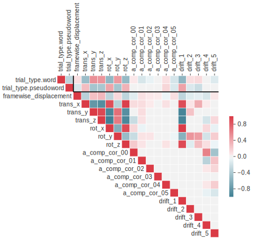
Subject: 03, Task: rhymejudgment

Correlation matrix
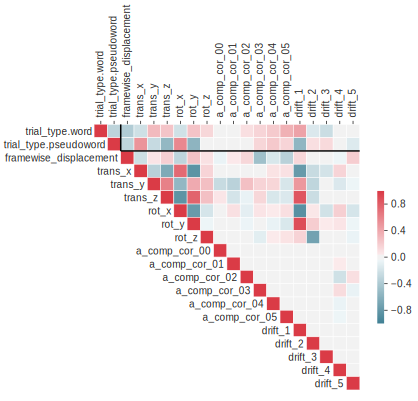
Subject: 04, Task: rhymejudgment
Correlation matrix
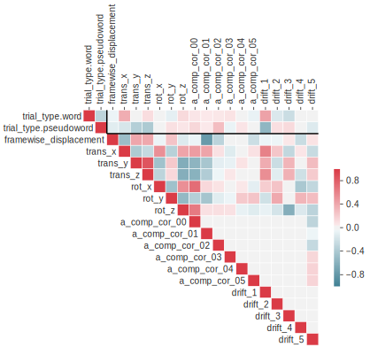
Subject: 05, Task: rhymejudgment
Correlation matrix
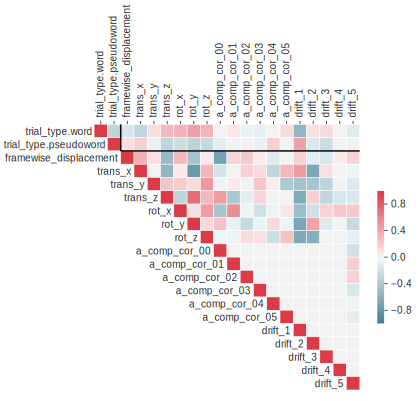
Subject: 06, Task: rhymejudgment
Correlation matrix
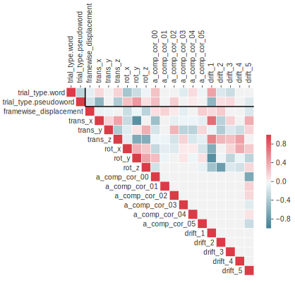
Subject: 07, Task: rhymejudgment
Correlation matrix
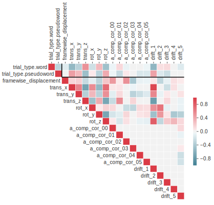
Subject: 08, Task: rhymejudgment
Correlation matrix
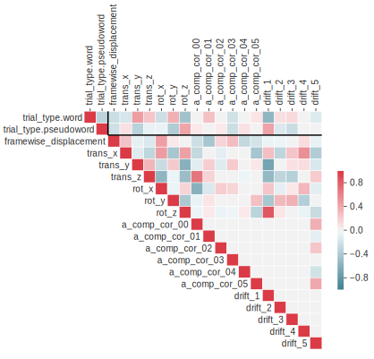
Subject: 09, Task: rhymejudgment
Correlation matrix
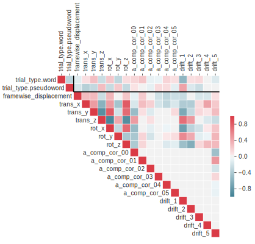
Subject: 10, Task: rhymejudgment
Correlation matrix
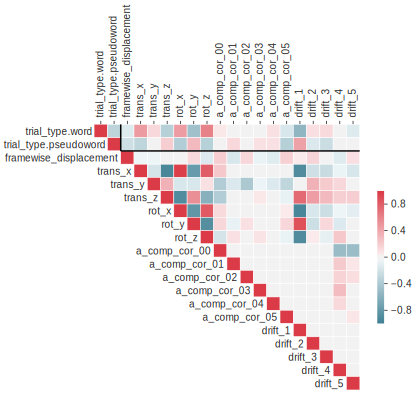
Subject: 11, Task: rhymejudgment
Correlation matrix
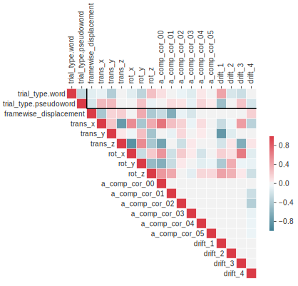
Subject: 12, Task: rhymejudgment
Correlation matrix
Subject: 13, Task: rhymejudgment
Correlation matrix
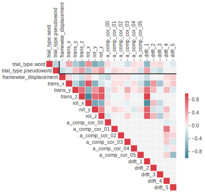
Contrasts
A contrast matrix was generated for each run. Except in very rare cases, these should be identical, so these should be inspected to ensure no unexpected differences are present.